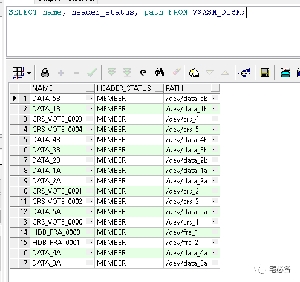

关于ASM磁盘发现
原创 2017-10-30 Oracle 宅必备
这个专题讲ASM相关的内容
上节讲了如何如何更改磁盘组，这节是磁盘发现的一些内容
磁盘发现如何工作
当ASM实例启动，ASM会发现和检查ASM_DISKSTRING初始化参数里面的路径下面的磁盘情况
其也会在如下情况下进行磁盘发现
-
使用如下命令时候:
-
使用ALTER DISKGROUP … MOUNT mount磁盘时
-
使用ALTER DISKGROUP … ONLINE DISK onlione磁盘时
-
使用CREATE 或 ALTER DISKGROUP…ADD DISK新增磁盘时
-
使用ALTER DISKGROUP…RESIZE DISK resize磁盘大小时
-
查询 SELECT … FROM V$ASM_DISKGROUP 或V$ASM_DISK视图时
-
使用OEM或asmca等图形化界面做上面的操作时
-
使用asmcmd命令行工具做上面操作时
当ASM 成功发现一个磁盘时，会将其添加到 V$ASM_DISK视图中

HEADER_STATUS有如下几个取值:
-
MEMBER代表该磁盘已经在磁盘组中了
-
CANDIDATE 代表磁盘目前不在磁盘组中，但是可以被添加进去
-
PROVISIONED代表磁盘目前不在磁盘组中，暂时不可以添加进去，需等待操作使其能够被ASM识别到
-
FORMER 代表磁盘以前属于磁盘组
-
FOREIGN 代表磁盘中的数据不是ASM生成的，加入后会重新格式化
磁盘发现规则
-
Oracle ASM最多可以发现10000个次磁盘，如果ASM_DISKSTRING 参数查找的超过1000个，则只会识别前10000个
-
Oracle ASM只会发现磁盘分区，不会发现包含分区表的的分区
-
CANDIDATE, PROVISIONED, 或者 FORMER 状态的磁盘可以添加到磁盘组中
-
FOREIGN状态的磁盘必须通过force命令进行添加
-
也可以添加使用force添加MEMBER状态的磁盘，不过需要该磁盘目前不属于磁盘组，否则该磁盘组将无法使用
如下情形将无法mount成功
1. 多路径问题
如磁盘涉及到多路径请使用多路径软件将该磁盘虚拟成一个路径或者调整ASM_DISKSTRING 参数的值使其只认到一个路径
2. 多个磁盘拥有相同的头部文件
这种情况发生在拷贝磁盘的情况下
提高磁盘发现速度
Oracle ASM使用ASM_DISKSTRING 参数的值来搜索可用磁盘
我们必须保证新增的磁盘被各个ASM实例的ASM_DISKSTRING 发现
该参数的默认值为null，我们可以设置该值为需要的路径来缩短发现时间
注意：该参数的默认值可能无法发现我们需要的所有磁盘
好了，这节讲了ASM 的磁盘发现，下节讲如果管理ASM的容量